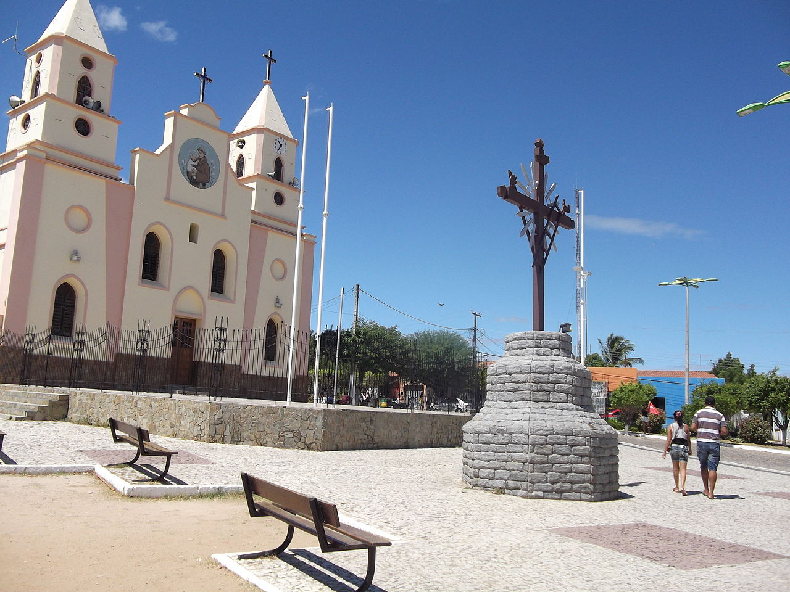

Geoinfos
Informações técnicas sobre relevo, população, IDH etc.
| INFORMAÇÕES | |
|---|---|
| Municípios limítrofes | Norte: Pentecoste e Maranguape, Leste: Palmácia, Pacoti, Guaramiranga e Mulungu, Sul: Canindé, Oeste: Paramoti |
| Fundação | 6 de agosto de 1958 (62 anos) |
| Área total | 926,271 km² |
| Clima | Tropical quente semi-árido brando |
| IDH | 0,618 — médio |
| PIB | R$ 59 503,276 mil |
| INFORMAÇÕES TERRITORIAIS | |
|---|---|
| Número de habitantes | 22 547 habitantes |
| Superfície de Caridade |
84 650 hectares
846,50 km² (326,84 sq mi) |
| Densidade populacional | 26,6 ha./km² |
| Altitude de Caridade | 140 metros de altitude |
| Coordenadas geográficas decimais |
Latitude:
-4.22627
Longitude: -39.2003 |
| Coordenadas geográficas sexagesimais | Latitude: 4° 13' 35'' Sul , Longitude: 39° 12' 1'' Oeste |
| INFORMAÇÕES DO MUNICÍPIO | |
|---|---|
| Endereço da Prefeitura Municipal de Caridade |
Caridade
Prefeitura de Caridade
Rua Cel. Francisco Linhares, 250 Caridade - CE, 62730-000 Brasil |
| Telefone da prefeitura |
(85) 3324-1111
Internacional: +55 85 3324-1111 |
| Fax |
(85) 3324-1646
Internacional: +55 85 3324-1646 |
| Endereço electrónicoda prefeitura |
caridade@daterranet.com.br
|
| Site oficial do município | caridade.ce.gov.br |
| INFORMAÇÕES DO ADMINISTRATIVAS | ||
|---|---|---|
| Prefeito de Caridade | Maria Amanda Lopes Costa | |
| Partido politico | PDT | |
| INFORMAÇÕES DE TRANSPORTE | |
|---|---|
| Transporte urbano disponível | - |
| Aeroporto |
Aeroporto Internacional Pinto Martins 89.5 km
Aeroporto de Sobral
140.1 km
Aeroporto Dix-Sept Rosad
230.8 km
|
| INFORMAÇÕES DE DISTÂNCIA A OUTRAS CIDADES | ||
|---|---|---|
| São Paulo : 2295 km | Rio de Janeiro : 2123 km | Brasília : 1602 km |
| Salvador : 976 km | Curitiba : 2594 km | Belo Horizonte : 1810 km |
| Manaus : 2317 km | Fortaleza : 92 km mais perto | Recife : 640 km |
| Goiânia : 1769 km | Belém : 1079 km | Porto Alegre : 3139 km |
| Guarulhos : 2273 km | Campinas : 2245 km | São Luís : 598 km |
| Distância calculada em linha reta! | ||
Fonte: Wikipedia e Cidade Brasil
História
Conheça mais sobre a história de Caridade.
Distrito criado por ato provincial de 4 de janeiro de 1911, e por ato estadual nº 1039, de 4 de agosto de 1911, subordinado ao município de Canindé. Foi elevado à categoria de município com a denominação de Caridade pela lei estadual nº 4157, de 6 de agosto de 1958. Foi instalado em 13 de setembro do mesmo ano.
As terras do lado oeste do Maciço de Baturité era habitadas por diversas etnias dentres as quais os jenipapo, kanyndé. A partir do século XVII com o sistema de sesmarias, surgem as fazendas para a criação de gado e a lavoura no ciclo econômico de carne de sol e charque. Situada ao lado da estrada dos sertões do interior para Maranguape e Fortaleza, que escoava o gado criadores de Boa Viagem, Santa Quitéria e Inhamuns para as feira de gados, desenvolveu-se como um ponto de passagem e comércio.
Um fato que contribuiu para o seu rápido desenvolvimento foi a trânsito de peregrinos para as romarias de Canindé e criação da missão de penitência.
Em suas terras foram encontradas ocorrência de barita, fonte de obtenção do bário, metal pesado, utilizado na indústria química, farmacêutica e de material elétrico e calcário (calcita). Mas atualmente só existe uma fábrica de roupas, a população sobrevive somente no comércio, aposentadoria e de serviços públicos.
Pontos Turísticos
Saiba mais sobre os melhores lugares e o que fazer em Caridade.
O santo padroeiro de Caridade é Santo Antônio, devoção iniciada ainda no século XIX, quando por volta de 1880, o padre José Tomais mandou edificar uma capela sob a invocação de Santo Antônio de Lisboa.
Imagem de Santo Antônio na entrada da cidade

A história do santo sem cabeça começou quando o então prefeito Raul Linhares, que governou a cidade entre 1981 e 1986 (falecido em 2005), encomendou ao artista cearense Francisco Barbosa de Oliveira, conhecido como Franzé D'Aurora, uma imagem gigante do padroeiro Santo Antônio - um monumento que em tamanho seria o terceiro maior do mundo - com templo e praça pública dotada de infraestrutura necessária para se transformar num polo de atração de fiéis e recanto de beleza turística e lazer da região. O prefeito pensava em transformar a cidade num polo de turismo religioso, aproveitando o potencial e a vocação da região que já conta com a festa de São Francisco, na vizinha Canindé.
Igreja Matriz de Santo Antônio

O local escolhido foi o Morro do Serrote. A obra teve início em 1992 e quando o corpo da estátua foi concluído, o coordenador do projeto, professor Alexandre, acompanhando de representantes do município, foram fazer uma medição de ventos. Quando chegaram ao alto do morro, concluíram que ali a ventania era muito forte, e principalmente, perceberam que o corpo não tinha condições de sustentar a cabeça que era muito grande, desproporcional ao resto da estátua.
Morro so Serrote, com o corpo sem cabeça

Diante do impasse, a cabeça do santo foi abandonada a 3 km do corpo, na Rua 102, no Bairro Conjunto Habitacional, onde permanece até hoje. Já serviu de abrigo, para moradores de rua, de motel, de esconderijo e brincadeiras de crianças. Depois, construíram algumas casas na rua e os muros isolaram a entrada da cabeça, que ficou sem acesso ao seu interior. A antiga Rua 102 ganhou notoriedade e um novo nome: Rua da Cabeça.
Rua da Cabeça

Como Chegar?
Veja como chegar nos melhores pontos de Caridade.